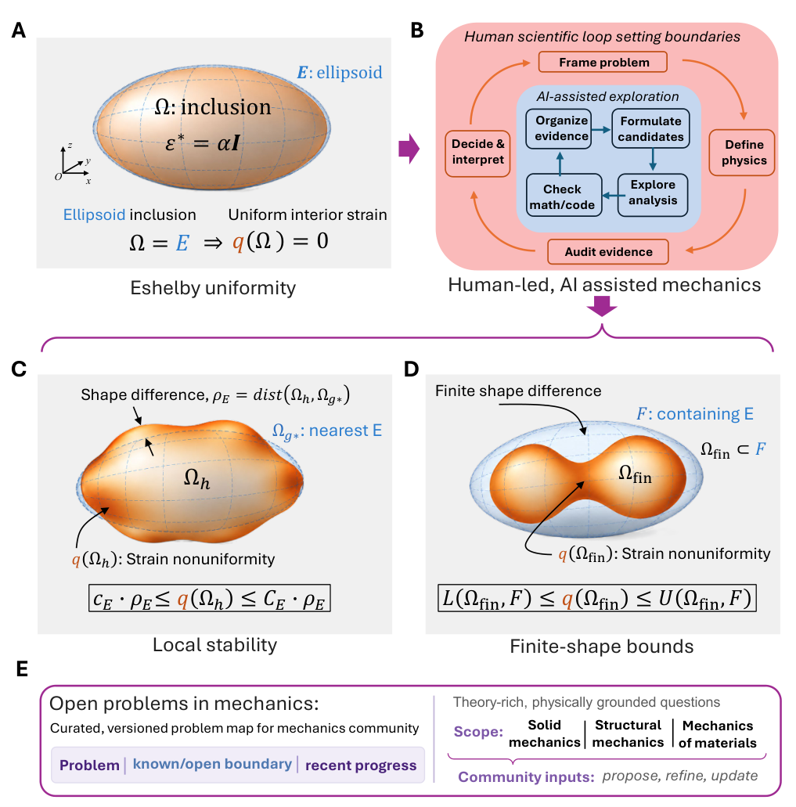
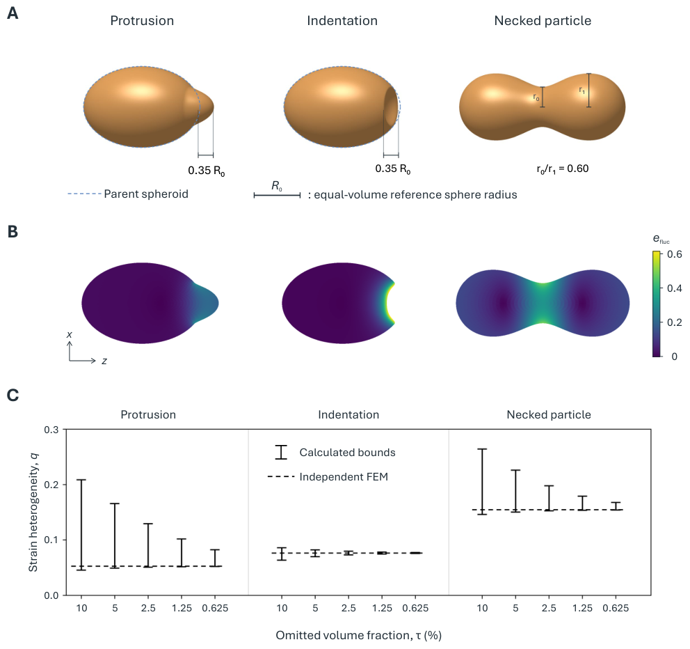

Selected mathematical components of the local Eshelby stability theorem are partially formalized and checked in Lean 4; the full theorem is not formally verified.
Abstract
How can human researchers use artificial intelligence (AI) to make progress on difficult mechanics problems while retaining control of physical significance, mathematical rigor, and validation? We explore this opportunity through a quantitative stability problem rooted in the Eshelby conjecture. For a uniform dilatational eigenstrain in a homogeneous isotropic solid, we establish a nonlinear two-sided relation between whole-interior strain heterogeneity and a geometry-only distance from the ellipsoid family, with half-order Sobolev scaling that captures morphological length scale. We then develop a complementary finite-shape theory: ellipsoidal subtraction yields an exact residual-field budget from which systematically convergent upper and lower bounds are obtained for a prescribed geometry. Applied to protruded, indented, and necked inclusions, the bounds agree with independent displacement-based finite-element calculations. The study also documents a human-led, AI-assisted research process in which researchers select consequential problems, shape targets, audit arguments, require independent checks, and interpret mechanics, while AI broadens analytical exploration and supports computation. This experience also led us to develop Open Problems in Mechanics, a versioned community-facing map that makes selected mechanics questions, their known/open boundaries, and criteria for progress explicit.
Problem
Eshelby's result says an ellipsoidal inclusion with uniform eigenstrain has a uniform interior strain. The open question is quantitative: how much interior strain heterogeneity arises when the inclusion is nonellipsoidal, and how strongly near-uniformity constrains shape.
Approach
For a uniform dilatational eigenstrain in a homogeneous isotropic solid, a local two-sided stability theorem relates normalized RMS strain fluctuation to an H^{1/2}-type distance from the ellipsoid family. The proof proceeds through a shape-to-field linearization with nine ellipsoidal null directions. A complementary finite-shape theory subtracts the ellipsoidal field to obtain a residual-field budget, which gives convergent upper and lower bounds for prescribed geometries. The work was done as a human-led, AI-assisted process, with partial Lean 4 formalization of selected components.

Figure 1: From exact Eshelby uniformity to quantitative shape stability. (A) A uniform dilatational eigenstrain in an ellipsoid produces uniform interior strain. (B) Human researchers frame the problem, define the physics, audit evidence, and interpret results; AI-assisted exploration operates within that scientific loop. (C) Schematic local stability relation: the whole-interior strain heterogene
Results
Two-sided control holds with half-order Sobolev scaling, made explicit by a spherical-spectrum analysis. Finite-shape bounds for protruded, indented, and necked inclusions agree with independent finite-element calculations. An 'Open Problems in Mechanics' community resource is also released.

Figure 3: Finite-shape bounds and independent finite-element comparison. (A) Protrusion, indentation, and necked particle (Cases B, C, and D) at a common length scale and view. The paired polar features are equal-and-opposite axial height perturbations over the same footprint, with maximum height/depth 0.35R_{0} and footprint radius 0.55b . Here R_{0}=(3V_{A}/4\pi)^{1/3} is fixed by the unmodified